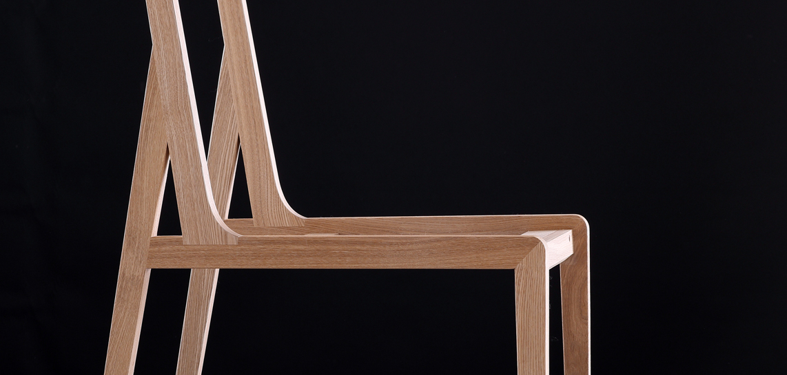

总有星辰从地平线冉冉升起，锐驰就是其中一颗。
提升全世界消费者的家居生活品质是我们不懈的追求，
“让生活的每一个细节都得到关爱”，对细节的执着伴随着锐驰的成长，也滋养着每一位
消费者的生活。

点，是起点，是立场
是锐驰“人本主义设计观”的理念
我们以点线作为基本设计元素
敢于打破常规超越平凡
线，是道路，是方向
是锐驰精神的延续

- 静味人生，缔造优雅、惬意的当代生活方式，将渴望宁静的本心和包容的人生哲思灌注到每件产品中。
- 守望温情，筑起悦耳目、舒身心的港湾，将人的需求作为设计灵感的不竭源泉。
- 潜心未来，让设计和欲望纯粹而真实地相遇，总有不同，总有意外。
CAMERICH（锐驰）品牌诞生于2005年，是具有国际化视野的高端家具品牌，专注于打造高品质的“当代生活方式”，
营销网络已覆盖全球，在英国、美国、德国、澳大利亚、比利时、新加坡等地区开设了48家品牌店，在国内30多个城市拥有50家专卖店，并且这一数字在持续更新。